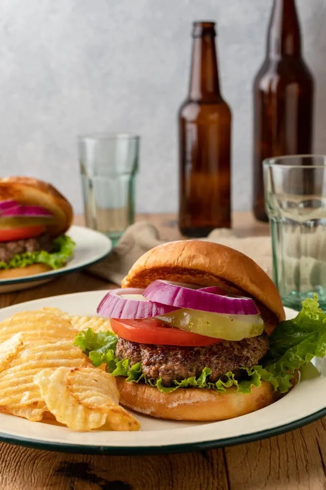

Grilled Bison Burger

Description
This grilled lean bison cheeseburger offers all the satisfaction of a classic beef burger with a healthier twist.
Add your favorite toppings for a gourmet burger you can feel good about!
Ingredients
- 1 Pound Ground Bison
- 1 egg
- 3 tbsp Worchesterchire sauce
- Hot sauce
- Garlic
- 4 Slices Cheese
- 4 Hamburger Buns
Steps
- Preheat the grill to high heat and oil the grate
- Mix bison, , egg, Worcestershire sauce, hot sauce, garlic, and pepper together in a bowl
- Form the mixture into patties
- Place patties on baking sheet, cover with foil, and refrigerate until chilled, about 15 minutes.
- Top each burger with a slice of cheese and wait until cheese is melted
- Use a thermometer to check if the inside temperature reaches 140F
- Serve the burgers on a serving platter